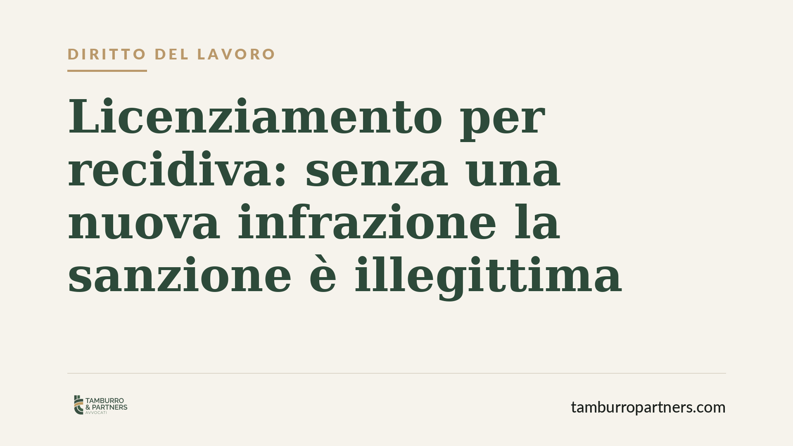
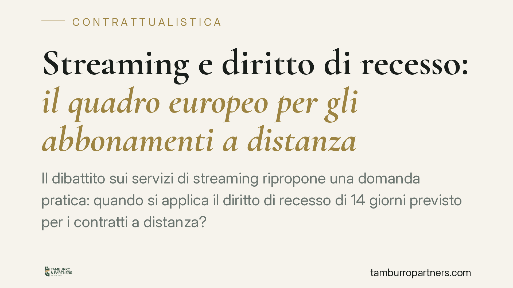
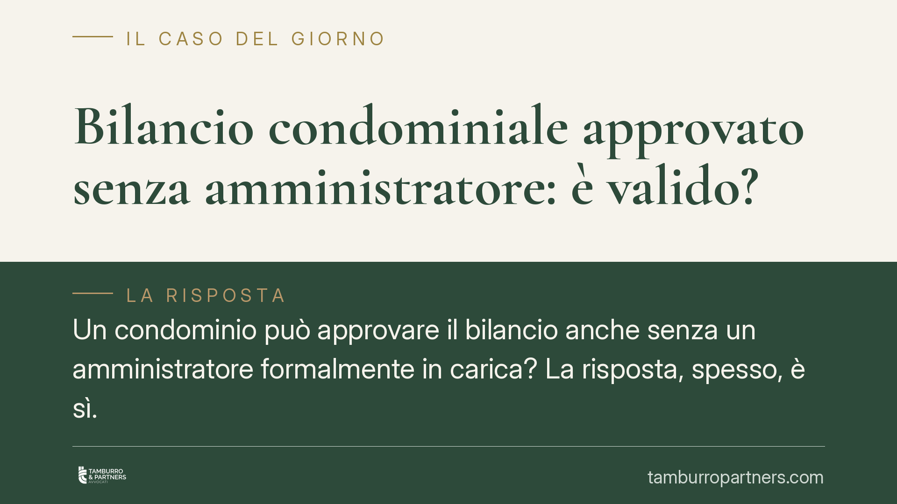
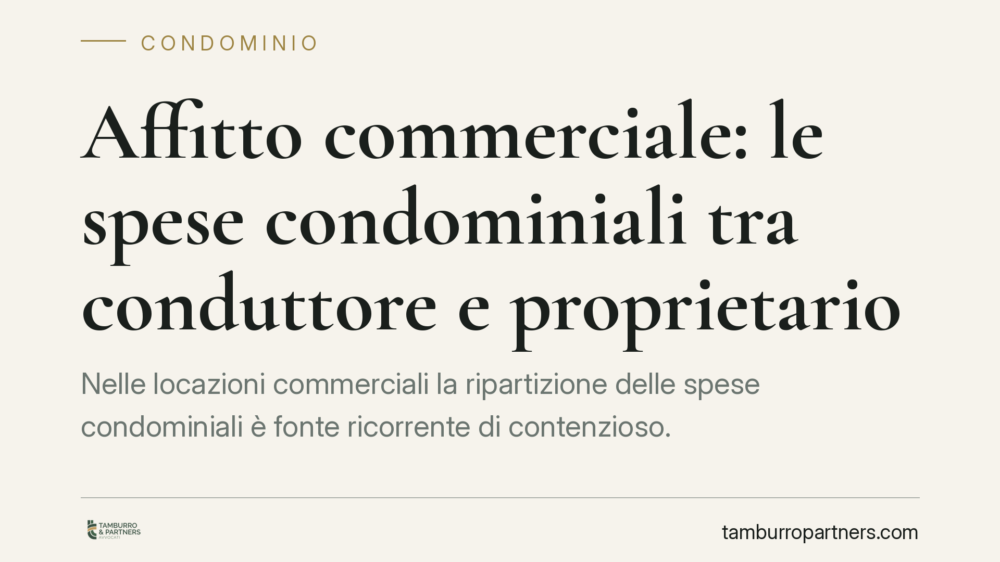
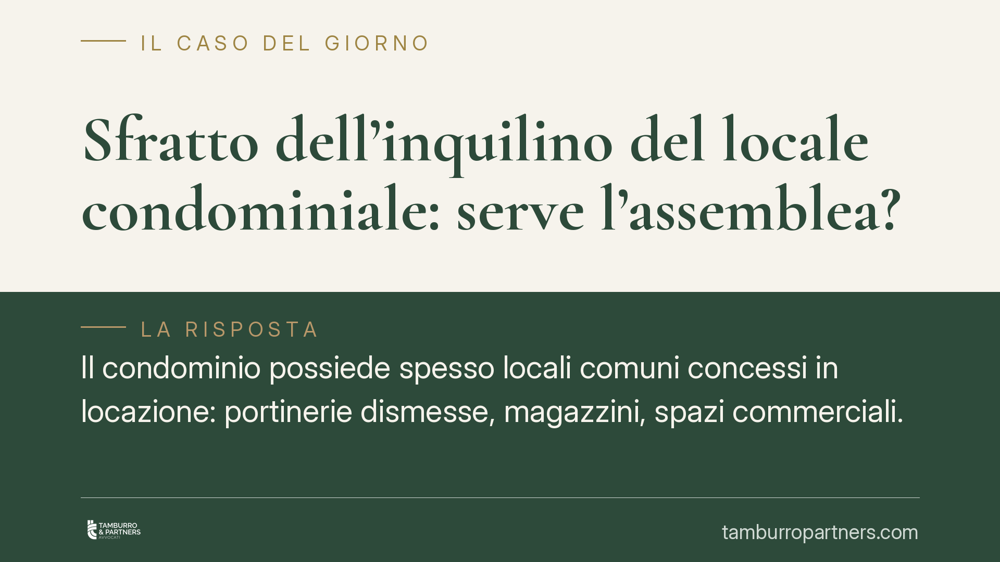
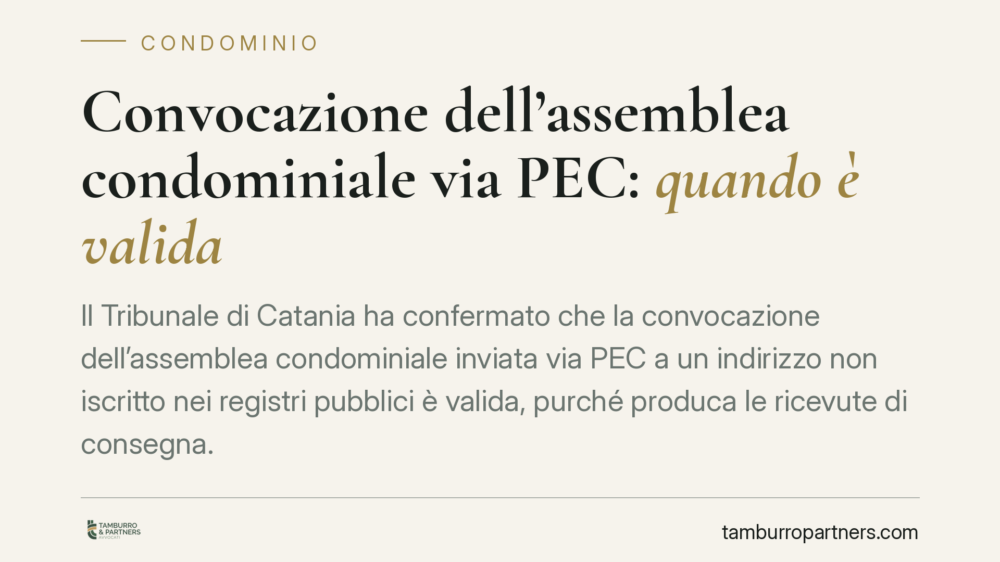
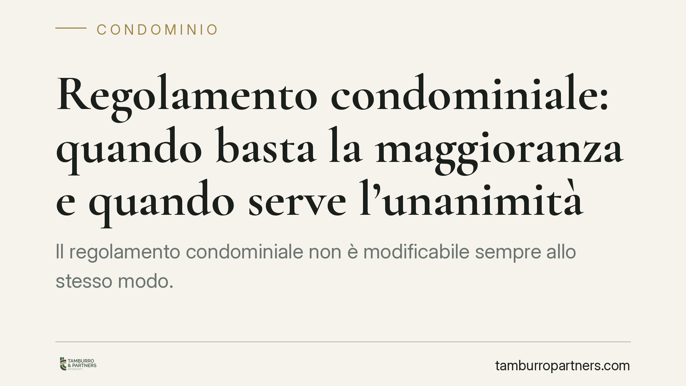

Ogni contributo verifica fonti primarie e indica cosa cambia per il destinatario. Mai marketing, mai pareri travestiti.
Vendere un immobile privo del certificato di agibilità espone il venditore a conseguenze economiche rilevanti. La giurisprudenza di legittimità considera l'agibilità un requisito c…
Il superamento sistematico dei limiti sui turni di reperibilità del personale sanitario torna al centro del dibattito giurisprudenziale. Secondo un orientamento della Corte di Cass…
Gli abbonamenti a servizi di streaming pongono un tema ricorrente: si può recedere dopo l'attivazione? La disciplina europea e il Codice del consumo tutelano il consumatore con un …

Con l'ordinanza 14077/2026 la Cassazione ribadisce un principio essenziale: il licenziamento per recidiva presuppone una nuova infrazione disciplinare, non basta sommare precedenti…

Il dibattito sui servizi di streaming ripropone una domanda pratica: quando si applica il diritto di recesso di 14 giorni previsto per i contratti a distanza? La qualificazione del…
Il Tribunale di Firenze ha stabilito che l'assemblea condominiale non può riconoscere una servitù su beni comuni con delibera a maggioranza. Serve l'unanimità dei condomini, perché…
Un chiarimento del Consiglio Nazionale del Notariato torna su una questione ricorrente: quando il costruttore vende i primi appartamenti, può trattenere per sé beni comuni come il …
Un ascensore o una piattaforma elevatrice possono essere installati in condominio anche quando nessun residente ha una disabilità certificata. La giurisprudenza recente valorizza i…
Terminato con esito positivo il periodo di prova, il rapporto di lavoro si consolida: da quel momento il datore non può recedere liberamente, ma solo per giusta causa o giustificat…
Il condomino può installare pannelli fotovoltaici sul proprio balcone senza chiedere il via libera dell'assemblea, purché rispetti alcuni limiti precisi. Il tema tocca il diritto d…

Il mandato annuale dell'amministratore è scaduto, ma l'assemblea approva comunque il rendiconto. La delibera è nulla? Non necessariamente. La scadenza formale dell'incarico non azz…

Nelle locazioni commerciali la ripartizione delle spese condominiali è fonte ricorrente di contenzioso. Il principio è netto: il conduttore paga ciò che è legato all'uso dell'immob…
Anffas Nazionale ha aperto fino al 20 luglio le iscrizioni a un corso gratuito sull'inclusione scolastica, rivolto a personale scolastico e operatori del Terzo Settore. L'iniziativ…
In condominio la voce "garage" genera contenziosi ricorrenti: chi non lo possiede contesta l'addebito della corrente e della manutenzione del cancello elettrico. La regola dipende …
La chiusura estiva o natalizia spinge molte aziende a imporre ferie collettive a tutto il personale. Il datore può farlo, ma entro limiti precisi fissati da legge e contratti. Cono…
Dal 1° gennaio 2026 dovrebbe entrare in vigore un permesso retribuito aggiuntivo per i lavoratori dipendenti affetti da patologia oncologica o cronica invalidante. La misura si aff…
Il Ministero del Lavoro ha chiarito quali irregolarità in materia di lavoro e sicurezza precludono l'accesso agli sgravi contributivi e ai bonus assunzioni. La sanzione non è solo …
La forma degli atti non è un ornamento: convocazioni, verbali e contestazioni disciplinari che ignorano le regole procedurali rischiano l'annullamento, anche quando non emerge un d…
Il Tribunale di Milano ha escluso la possibilità di ridurre i crediti contributivi nell'ambito della composizione negoziata della crisi. La pronuncia conferma che questa fase strag…
Non tutto, in condominio, è negoziabile. Alcune regole restano ferme anche di fronte a un regolamento contrattuale o a una delibera assembleare. Sapere quali norme sono inderogabil…
Quando una colonna di scarico condominiale si rompe, la domanda è sempre la stessa: chi paga la riparazione e i danni provocati? Il Tribunale di Roma, con la sentenza n. 9069 del 2…
Si discute di un possibile ampliamento del congedo parentale fino ai 14 anni dei figli. Allo stato la disciplina vigente resta ferma ai 12 anni. Prima di riorganizzare permessi e a…

Il condominio possiede spesso locali comuni concessi in locazione: portinerie dismesse, magazzini, spazi commerciali. Quando l'inquilino non paga, chi decide lo sfratto? Il Tribuna…
Il Forum Terzo Settore ha accolto con favore il Piano Nazionale dell'Economia Sociale, valorizzando finanziamenti, formazione dei volontari e collaborazione tra terzo settore e amm…

Il Tribunale di Catania ha confermato che convocare l'assemblea di condominio via PEC è valido anche quando l'indirizzo non risulta iscritto nei pubblici registri, purché la comuni…

Il regolamento condominiale non è modificabile sempre allo stesso modo. Una recente sentenza del Tribunale di Milano ribadisce una distinzione decisiva: le clausole organizzative s…
Una recente pronuncia della Corte d'Appello di Brescia ribadisce che le clausole di buon vicinato inserite nel contratto di locazione hanno valore di obbligo contrattuale. La loro …
La legge 166/2016, nota come legge Gadda, si avvicina al decennale con la prospettiva di ampliare il paniere di beni destinabili a solidarietà. Per gli enti del terzo settore che g…
Circolano indicazioni su un inasprimento degli adempimenti INPS per la gestione dei permessi ex Legge 104 e dei congedi straordinari, con nuovi obblighi nella compilazione del flus…
Licenziare il portiere non è una decisione libera dell'assemblea. Occorre distinguere tra la cessazione del singolo rapporto di lavoro, che spetta all'amministratore come datore di…